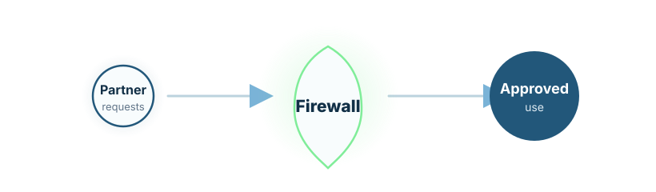

Governed access
Control which users, institutions, partners, and systems can see specific data views.
Secure biomedical collaboration
Controlled access infrastructure for sensitive omics and biomedical data.
Omics Firewall is LydiaRX’s architecture for secure, governed, and commercially usable access to sensitive genomic, omics, clinical, and biomedical data.
Omics Firewall acts as the boundary layer between raw biomedical data and research, AI training, pharma collaboration, model development, and controlled output release.
It governs who can access which data views, what computations are permitted, which models may be trained, what outputs may leave the environment, and under which approvals.

Control which users, institutions, partners, and systems can see specific data views.
Allow approved analysis inside controlled environments without uncontrolled raw-data export.
Map data access and computation to consent, licence, jurisdictional, and institutional conditions.
Track datasets, transformations, model training, outputs, approvals, and release decisions.
Control model training, evaluation, release, partner workspaces, and downstream use.
Review and approve outbound reports, aggregates, biomarkers, and other deliverables.
The same architectural principles apply to regulated supply chains, pharmaceutical data exchange, product provenance, controlled manufacturing documentation, and sensitive commercial collaboration.
AI agents can support proposal classification, metadata normalisation, compliance checklist generation, audit package preparation, suspicious export detection, and cohort-query assistance while sensitive approvals remain human-owned.